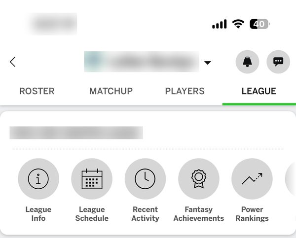
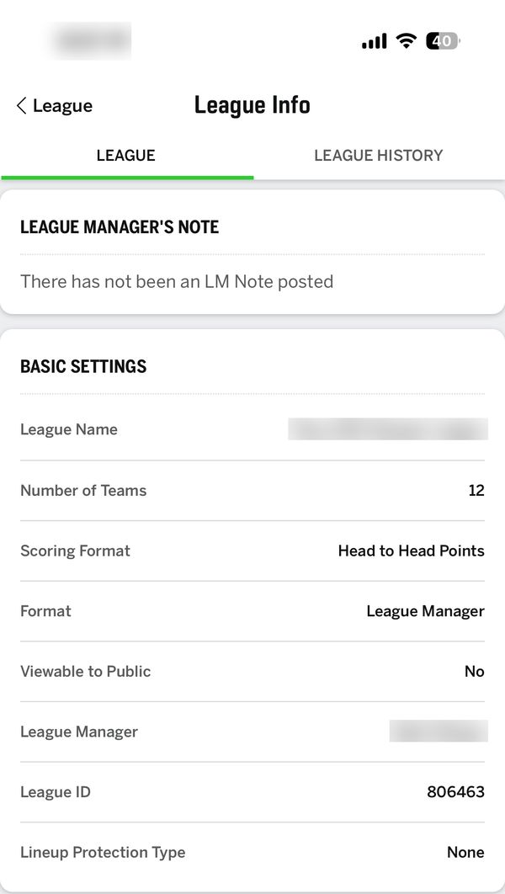
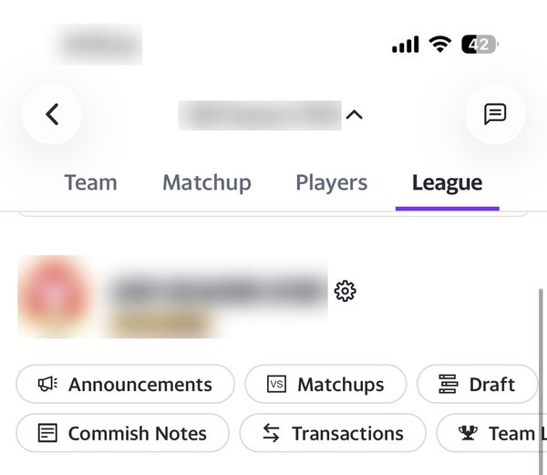
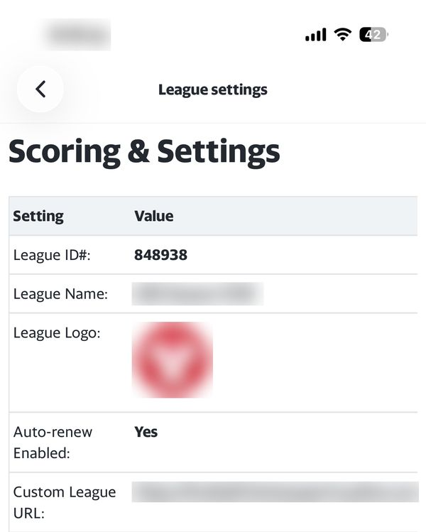

Add your league rosters
Two steps: find the page that lists every team's roster, then copy and paste it here.
Paste your link or DDF block
Already added your league in an AI chat? Paste the DDF link or the ddf-state block it gave you and we will pick up where you left off.
That link looks incomplete. Paste the block from your chat instead.
Step 1Find the page that lists every team's roster
Have a link or league ID?
League numbers only work on Sleeper. For ESPN or Yahoo, paste any page link from your league, or just the league ID, and we'll hand back the link to your rosters page.
Where do I find my league ID?
ESPN Fantasy app
- Open your league in the ESPN Fantasy app.
- Tap the League tab.
- Tap League Info.
- Check League ID under Basic Settings.
In a web address it is the number after leagueId=:
fantasy.espn.com/football/league?leagueId=123456

(opens full size)
(opens full size)Yahoo Fantasy app
- Open your league in the Yahoo Fantasy app.
- Tap the League tab.
- Tap the settings gear next to the league name.
- Check League ID#, the first row.
In a web address it is the number after /f1/:
football.fantasysports.yahoo.com/f1/123456

(opens full size)
(opens full size)Sleeper app
- Open your league in the Sleeper app.
- Tap League Settings, then General League Settings.
- Scroll to the bottom and tap Copy League ID.
In a web address it is the long number (about 18 digits) after /leagues/:
sleeper.com/leagues/123456789012345678
Prefer to click through yourself?
Show me how to copy every team's roster
Yahoo on iPhone (Safari)
- Open your league's rosters page in Safari. Use Get my rosters link above to get it.
- Long-press the page, tap Select All, then tap Copy.
- Paste into the box in step 2.
On Sleeper, open your league and go to Rosters. Select everything on the page (Ctrl+A, or Cmd+A on a Mac), copy it, and paste it into the box in step 2. Sleeper also takes a league number: use the box on the left.
Step 2Copy and paste every team's roster
We need all the teams in your league, not just yours. On the page that lists every team's roster, select everything (Ctrl+A, or Cmd+A on a Mac), copy it (Ctrl+C or Cmd+C), then paste it here (Ctrl+V or Cmd+V).
On iPhone: long-press the page, tap Select All, tap Copy, then paste here.
Here's what we read from your paste
Partial rosters are fine. You can continue with matched players while lines that need a look or were not found remain.
Check your team names
Enter your league rosters
Add each team's name, then add its players.
Add your team names first
| PLAYER | POSITION | Remove |
|---|
Player values appear once your league's settings are confirmed.
Just checking one trade?
You can evaluate a one-off trade with only your roster. Add the players you want to compare.
A desktop or laptop is easier for league entry. Your AI chat can help prepare the roster text.
Take DDF into your AI chat
Copy a ready-to-paste prompt for your preferred AI chatbot.